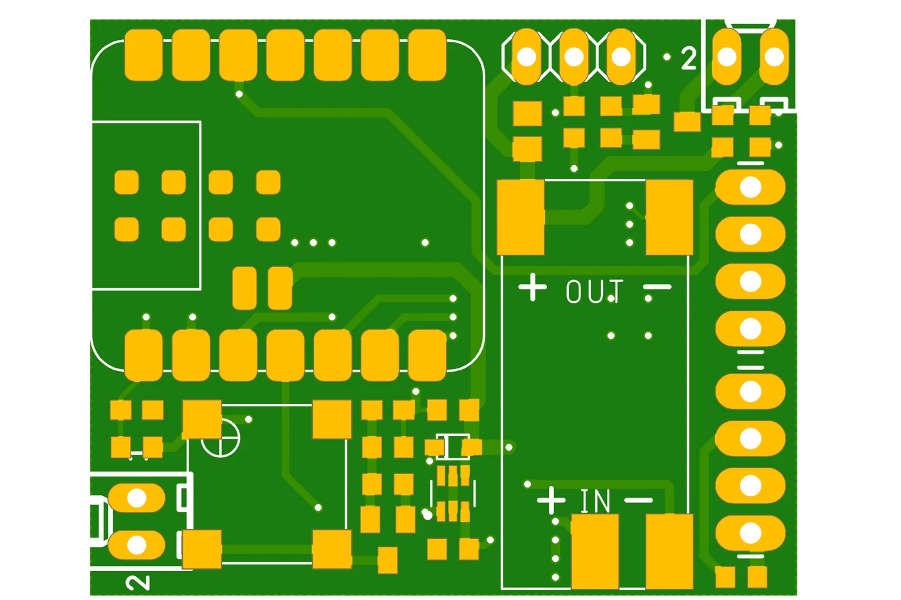
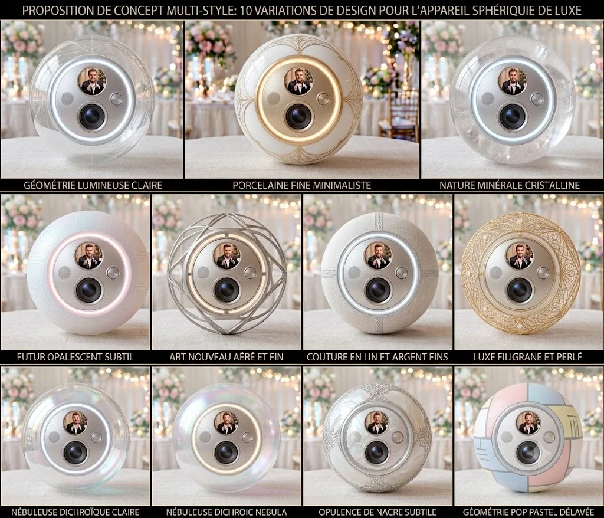
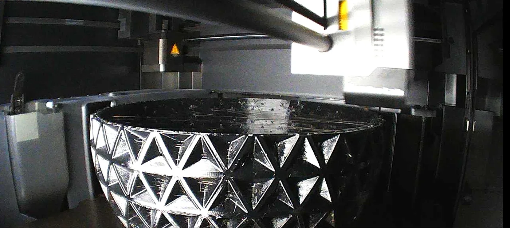
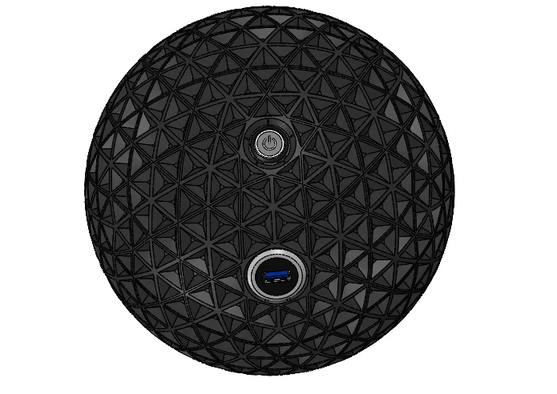

Filmer les interactions des invités avec un objet qu’ils peuvent se passer pendant un événement.
L’intervention
Recherche de style, boîtier souple en TPU et déclenchement vidéo par accéléromètre.
Le principe retenu
Filmer pendant les mouvements et limiter la consommation entre deux utilisations.
Besoin et contraintes
Développé pour La Forge à Souvenirs, ORBI reprend l’idée du livre d’or vidéo dans un objet mobile : une balle que les invités peuvent se passer pendant un mariage ou un événement pour filmer leurs interactions.
Le déclenchement doit suivre l’usage de l’objet, sans demander de manipuler une application. La consommation entre deux utilisations et les contraintes liées aux chocs orientent la conception.
Le boîtier doit rester souple pour amortir les impacts et limiter le risque de blessure lors des manipulations.
Conception et architecture
Un accéléromètre sert de déclencheur : ORBI filme tant que l’objet est en mouvement. Cette détection vise à limiter la consommation électrique lorsque la balle n’est pas utilisée.
La conception associe la détection de mouvement, la commande d’enregistrement et l’intégration de la caméra dans un volume sphérique. Le fonctionnement est adapté à un objet qui circule entre les invités, plutôt qu’au décroché d’un combiné comme sur le vidéobook.
Carte électronique de commande
Une carte électronique dédiée assure la commande liée à la détection de mouvement. La conception du circuit imprimé accompagne l’intégration de cette fonction dans la balle.

Circuit imprimé de la carte de commande ORBI V1.0.0.
Recherche de style
Des modèles visuels générés par IA ont servi à explorer plusieurs styles et à définir une direction esthétique. Ces propositions ont guidé la recherche de forme ; elles ne décrivent pas les matériaux ni les performances du boîtier réalisé.

Recherche de style : propositions générées par IA en amont de la conception.
Réalisation et intégration
Le boîtier est réalisé en TPU, un matériau flexible choisi pour sa souplesse et sa capacité à se déformer sous un impact. Ce choix vise à protéger l’électronique et à limiter les conséquences d’un choc avec une personne.
L’intégration mécanique doit maintenir les éléments internes tout en laissant le boîtier jouer son rôle d’amortissement. La zone de prise de vue doit rester dégagée lorsque l’objet est manipulé.

Fabrication du boîtier souple en TPU par impression 3D.
Intégration mécanique
La vue éclatée montre l’intégration d’une caméra compacte dans la coque sphérique, avec une façade et une bague séparées. Les ouvertures de la façade dégagent l’objectif et l’écran de la caméra.
Conception 3D de l’assemblage et de l’intégration de la caméra.
La face arrière regroupe le bouton de mise sous tension et un connecteur USB. La coque présente un motif triangulé sur sa surface.

Vue arrière du boîtier : bouton, connecteur USB et motif de surface.
Le principe de commande repose sur l’accéléromètre : le mouvement déclenche la prise de vue et maintient l’enregistrement pendant l’utilisation.
Points de contrôle
Les essais à documenter portent sur le déclenchement pendant les mouvements, le comportement à l’immobilisation et la continuité des fichiers vidéo enregistrés.
La consommation au repos et pendant l’enregistrement doit être mesurée pour caractériser l’autonomie. Les seuils de détection doivent également être vérifiés dans les usages prévus.
Pour le boîtier, les contrôles portent sur la tenue des assemblages, le maintien de l’électronique et le comportement après des impacts répétés.
Résultat
ORBI transpose le vidéobook de La Forge à Souvenirs dans une balle vidéo événementielle : une enveloppe souple en TPU et un déclenchement par le mouvement, conçu pour limiter la consommation entre deux utilisations.
Le travail réunit recherche de style, conception mécanique et commande de l’enregistrement. Les valeurs d’autonomie et de résistance aux chocs restent à caractériser par des essais.
Un projet similaire ?
Parlons de votre besoin.
Un objet connecté, un boîtier sur mesure ou un prototype à développer.